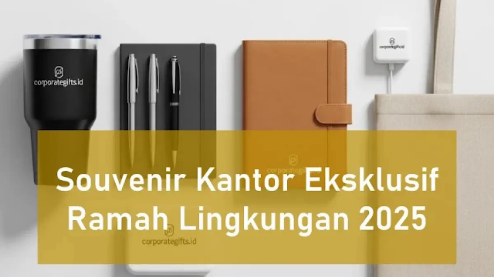

Corporate Gifts ID - Di tengah akselerasi komitmen global terhadap prinsip Environmental, Social, and Governance (ESG), souvenir kantor eksklusif ramah lingkungan telah bertransformasi dari sekadar opsi alternatif menjadi instrumen utama dalam strategi corporate gifting modern. Cenderamata ramah lingkungan memadukan kemewahan desain dengan material berkelanjutan, seperti tumbler baja tahan karat berinsulasi, tas jinjing kanvas katun organik, perlengkapan meja dari serat bambu alami, hingga set alat makan logam yang dapat dipakai berulang kali.
Pendekatan ini tidak hanya menekan timbunan sampah plastik sekali pakai di tempat pembuangan akhir, tetapi juga secara konkret mengomunikasikan tanggung jawab moral perusahaan kepada para pemangku kepentingan (), mitra bisnis strategis, serta karyawan. Simak kurasi ide produk, inovasi tren, dan panduan memilih rekanan pengadaan cenderamata ramah lingkungan berikut ini.
Poin Kunci Souvenir Kantor Ramah Lingkungan:
- Mendukung Nilai ESG Korporat: Mempertegas kepedulian nyata perusahaan terhadap pengurangan jejak karbon dan kelestarian alam dalam laporan keberlanjutan tahunan.
- Material Awet & Siklus Panjang: Mengutamakan material yang tahan lama seperti stainless steel food-grade, kayu solid tersertifikasi, dan serat bambu terbarukan.
- Estetika Minimalis Natural: Mengusung palet warna bumi (earth tone) dan teknik kustomisasi logo minim bahan kimia beracun, seperti grafir laser atau sablon cat berbahan dasar air.
- Kemasan Bebas Plastik: Menggunakan kotak pembungkus kaku dari kertas daur ulang (recycled craft paper) tanpa laminasi plastik berperekat.
Mengapa Souvenir Ramah Lingkungan Menjadi Standar Baru Korporat
Pergeseran preferensi konsumen dan mitra B2B menuntut transparansi etis yang lebih tinggi. Memberikan cenderamata murah yang cepat rusak atau berbahan plastik tipis justru dapat mencoreng reputasi kredibilitas institusi. Berikut empat alasan strategis mengapa suvenir ramah lingkungan sangat krusial:
- Penguatan Citra Merek Positif: Meningkatkan kesadaran publik bahwa institusi Anda proaktif dalam mengadopsi praktik operasional yang bertanggung jawab terhadap masa depan bumi.
- Resonansi Kuat dengan Talenta Muda: Tenaga kerja generasi milenial dan Gen Z menaruh respek tinggi pada perusahaan yang memiliki visi nyata terhadap pencegahan perubahan iklim.
- Efisiensi Paparan Branding Jangka Panjang: Produk berkualitas tinggi seperti botol minum vakum atau tas kanvas tebal dipakai dalam rutinitas harian selama bertahun-tahun, melipatgandakan nilai investasi promosi.
- Kepatuhan Regulasi Pemerintah: Sejalan dengan larangan penggunaan kantong plastik sekali pakai di berbagai kota besar di Indonesia.
4 Kategori Produk Souvenir Kantor Ramah Lingkungan Paling Diminati
Berikut empat kategori produk terbukti sukses memadukan nilai fungsi tinggi, estetika elegan, dan prinsip kelestarian alam:
1. Tumbler Stainless Steel Berinsulasi Vakum Ganda
Sebagai pengganti botol air kemasan sekali pakai, tumbler stainless steel food-grade SUS304 menjadi pilihan nomor satu. Mampu menahan suhu minuman panas hingga 8 jam dan dingin hingga 12 jam, produk ini sangat fungsional di meja kerja kantor maupun saat beraktivitas di luar ruangan. Personalisasi logo melalui teknik grafir laser menghasilkan ukiran permanen yang sangat rapi.
2. Tas Jinjing Kanvas Katun Organik dan Spunbond Tebal
Tas seminar berbahan kain kanvas alami berdensitas tebal merupakan alternatif pengganti kantong belanja plastik yang sangat modis. Dengan area cetak yang luas di kedua sisinya, tas kanvas memberikan visibilitas logo yang sangat dominan ketika dibawa bepergian ke pusat perbelanjaan atau perpustakaan.
3. Perlengkapan Meja dan Pulpen Serat Bambu Alami
Bambu adalah tanaman dengan laju pertumbuhan tercepat di dunia yang dapat dipanen tanpa merusak ekosistem tanah. Pulpen berbodi bambu alami yang dipadukan dengan tempat pulpen (desk organizer) kayu solid menghadirkan nuansa hangat, alami, dan sangat berkelas di meja pimpinan.
4. Set Alat Makan Stainless Steel Reusable
Paket sendok, garpu, sumpit, dan sedotan logam yang dikemas rapi di dalam kantong kain blacu atau kotak gandum alami (wheat straw box) mengampanyekan gaya hidup higienis dan bebas sendok plastik saat makan siang di lingkungan kantor.
Tren Souvenir Berkelanjutan dan Inovasi Hijau 2026
Industri cenderamata korporat terus melahirkan inovasi baru untuk menjawab tuntutan keberlanjutan. Berikut empat tren utama yang mendominasi pengadaan B2B:
- Kemasan Bebas Plastik (Zero-Plastic Packaging): Penggunaan kotak boks kaku berbahan kertas daur ulang dengan bantalan serutan kertas (paper shredder) atau spons berbasis pati singkong alami menggantikan lembaran plastik gelembung (bubble wrap).
- Digital Proofing Presisi: Penggunaan pratinjau mockup digital tiga dimensi (3D) sebelum produksi massal secara efektif meniadakan limbah sampel dummy yang tidak terpakai.
- Perangkat Teknologi Hibrida Ramah Lingkungan: Kehadiran powerbank bertenaga surya (solar power bank) atau speaker nirkabel berbahan serat gabus alami (cork) menggabungkan kecanggihan fungsi digital dengan material terbarukan.
- Kolaborasi dengan Program CSR Lingkungan: Penyisipan kartu benih tanaman (plantable seed paper) di dalam paket suvenir, di mana penerima dapat menanam kartu ucapan tersebut ke dalam pot tanah untuk menumbuhkan bunga atau tanaman herbal.

Presentasi kemasan yang rapi dan estetis membuktikan bahwa cenderamata ramah lingkungan mampu tampil sangat mewah dan memukau.
Matriks Komparasi Kombinasi Souvenir Ramah Lingkungan Premium
Berikut rangkuman opsi produk ramah lingkungan berdaya guna tinggi beserta keunggulan fungsionalnya:
| Kategori Suvenir | Contoh Produk Unggulan | Keunggulan Fungsional | Kontribusi Keberlanjutan (ESG) |
|---|---|---|---|
| Drinkware Premium | Tumbler vakum stainless steel SUS304 | Tahan suhu panas/dingin 12 jam, bebas karat, elegan | Mengurangi ribuan botol plastik sekali pakai per orang per tahun |
| Tas Jinjing & Pouch | Tote bag kanvas katun organik 12oz | Kuat memuat beban laptop, modis, area logo luas | Material serat alami terurai hayati, pengganti kantong plastik |
| Stationery & Meja | Buku agenda kertas daur ulang & pulpen bambu | Permukaan halus, tampilan hangat berkelas | Bahan baku bambu terbarukan cepat dan kertas bebas klorin |
| Dining & Cutlery | Set alat makan stainless dalam kotak gandum | Higienis, mudah dibersihkan, praktis dibawa | Menghentikan penggunaan sendok, garpu, dan sedotan plastik |
Panduan Memilih Vendor Souvenir Berkelanjutan Terpercaya
Tidak semua vendor memiliki komitmen otentik terhadap kelestarian alam. Terapkan checklist berikut saat menyeleksi mitra pengadaan:
- Verifikasi Otentisitas Material: Pastikan bahan bambu, kayu, maupun kain benar-benar berasal dari sumber alami dan bukan sekadar plastik bermotif serat kayu ().
- Ketersediaan Portofolio B2B: Telaah rekam jejak vendor dalam menangani proyek cenderamata hijau untuk BUMN, korporasi swasta, maupun instansi pemerintah.
- Komitmen Pengemasan Hijau: Pastikan vendor tidak membungkus setiap unit produk dengan plastik sachet secara individual, melainkan menggunakan kertas roti atau kantong serut kain.
Harmonisasi Branding: Teknik Kustomisasi Logo Ramah Lingkungan
Agar selaras dengan nilai alami produk, terapkan prinsip kustomisasi visual berikut:
- Grafir Laser Presisi: Sangat disarankan untuk material logam, bambu, dan kayu karena memanfaatkan sinar termal tanpa menggunakan tinta kimiawi.
- Deboss / Emboss Kering: Menghasilkan relief logo yang tenggelam elegan pada sampul buku agenda kulit sintetis daur ulang tanpa memerlukan foil emas atau perak berbasis plastik.
- Palet Warna Earth Tone: Gunakan warna-warna alam seperti hijau daun, cokelat kayu, abu-abu batu, atau krem gading untuk memperkuat karakter visual keberlanjutan brand Anda.
Pertanyaan Seputar Souvenir Kantor Ramah Lingkungan (FAQ)
Kesimpulan dan Solusi Souvenir Ramah Lingkungan CorporateGifts.ID
Mengadopsi souvenir kantor eksklusif ramah lingkungan membuktikan kepemimpinan institusi Anda dalam memadukan kepedulian ekologis dengan prestise bisnis yang elegan. Cenderamata yang dirancang dengan kesadaran hijau akan terus dihargai dan digunakan oleh mitra kerja Anda.
Percayakan pengadaan cenderamata ramah lingkungan perusahaan Anda kepada CorporateGifts.ID. Kami menyediakan aneka pilihan tumbler stainless steel tahan lama, tote bag kanvas organik, alat tulis serat bambu, hingga kemasan ramah lingkungan dengan fasilitas mockup digital cuma-cuma dan pengiriman aman ke seluruh nusantara.

Ditulis oleh: Arinda Zakia
Senior Corporate Gifting SpecialistSpesialis pengadaan suvenir korporat dan konsultan cenderamata berkelanjutan di CorporateGifts.ID. Berpengalaman lebih dari 9 tahun mendampingi divisi ESG, Corporate Communication, dan Procurement dalam menyusun paket suvenir ramah lingkungan yang berdampak tinggi bagi citra perusahaan.
Lihat Profil Lengkap & Panduan Lainnya